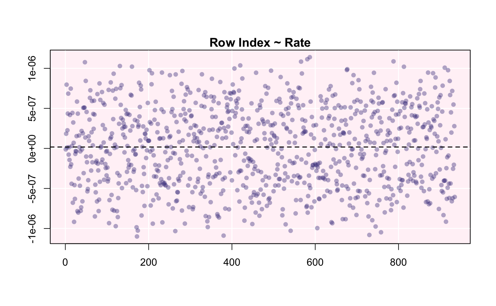
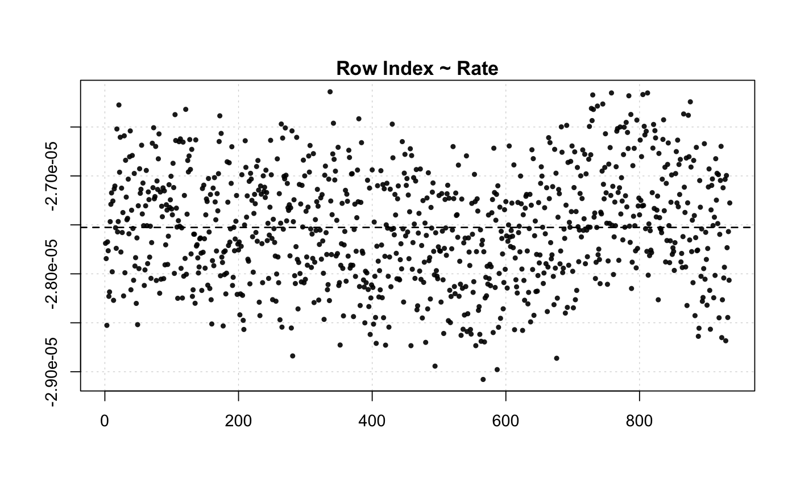
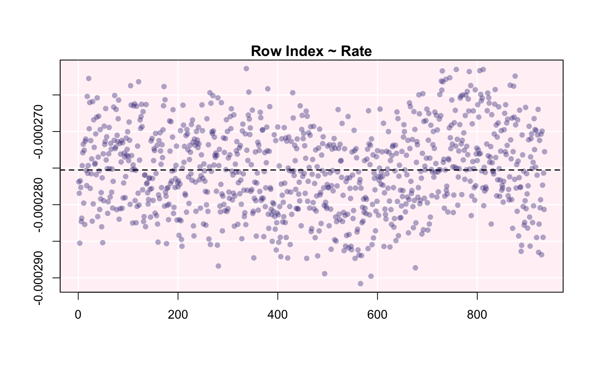

R/calc_rate.ft.R
calc_rate.ft.RdCalculates rate of $O_2$ uptake in flowthrough respirometry given a flow-rate and both inflow.o2 and outflow.o2 oxygen concentrations.
calc_rate.ft(x = NULL, time = NULL, inflow.o2 = NULL, outflow.o2 = NULL, flowrate = NULL, plot = TRUE)
| x | data frame or object of class |
|---|---|
| time | numeric. Defaults to NULL. This selects the time column if a data frame ('df') is provided. Otherwise, this is a numeric vector for time data. |
| inflow.o2 | numeric. Defaults to NULL. This selects the inflow O2 column if a data frame ('df') is provided. Otherwise, this is a numeric vector for inflow oxygen concentration. |
| outflow.o2 | numeric. Defaults to NULL. This selects the outflow O2 column if a data frame ('df') is provided. Otherwise, this is a numeric vector for outflow oxygen concentration. |
| flowrate | numeric vector. The flow rate. No unit of measurement is expected; you will specify it when you perform conversions later on. However, it must be in L per unit time (s,m,h), for example L/s. |
| plot | logical. Defaults to TRUE. Plots the data. |
An object of class "calc_rate.ft".
Can return a single value, or multiple and mean values based on continuous data.
There are no units involved in calc_rate.ft. This is a deliberate decision.
Units are called in a later function when volumetric and/or mass-specific
rates of oxygen use are computed in convert_rate() and convert_DO().
# Single numeric values calc_rate.ft(inflow.o2 = 8.88, outflow.o2 = 8.17, flowrate = 0.000039)#>#> Rate: #> [1] -2.769e-05# Numeric values and vector calc_rate.ft(inflow.o2 = 8.88, outflow.o2 = flowthrough.rd$o2.in, flowrate = 0.000039)#>#> Rate (first 6): #> [1] -1.196231e-08 1.833994e-07 7.964244e-07 1.182957e-08 2.262682e-07 #> [6] 4.350694e-07 #> #> Mean: #> [1] 1.74903e-08# Vectors calc_rate.ft(inflow.o2 = flowthrough.rd$o2.in, outflow.o2 = flowthrough.rd$o2.out, flowrate = 0.000039)#>#> Rate (first 6): #> [1] -2.768858e-05 -2.784439e-05 -2.852644e-05 -2.767369e-05 -2.776415e-05 #> [6] -2.823009e-05 #> #> Mean: #> [1] -2.752597e-05# A data frame calc_rate.ft(flowthrough.rd, time = 1, outflow.o2 = 2, inflow.o2 = 3, flowrate = 0.00039)#>#> Rate (first 6): #> [1] -0.0002768858 -0.0002784439 -0.0002852644 -0.0002767369 -0.0002776415 #> [6] -0.0002823009 #> #> Mean: #> [1] -0.0002752597